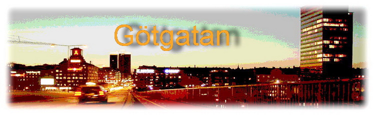
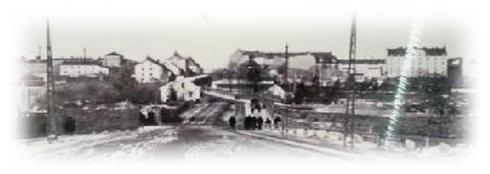

|
Karta från 2018 Här finns klickbara siffror som tar dig till platsen för siffran Per anders Fogelström om bl a Götgatan
Krogar på Götgatan på slutet av |

Götgatan är en gata på Södermalm i centrala Stockholm som sträcker sig från Hornsgatan och Stockholms stadsmuseum söderut till Skanstull och Skanstullsbron med en längd av cirka 1,6 kilometer. Det norra avsnittet kallas även Götgatsbacken. Götgatan var vid sidan av Drottninggatan och Regeringsgatan en av de tre klassiska in- och utfartsvägarna till och från Stockholm.
Innan det fanns en bro vid Hornstull, var gatans föregångare Gamla Göta landsväg den bekvämaste förbindelsen till bygderna söder och väster om Södermalm. Då fanns en landförbindelse via det nu genombrutna näset vid Skanstull.
Det gamla huvudstråket mellan Uppland och Södermanland gick från Malmtorget (idag Södermalmstorg), öster om sjön Fatburen (med en kraftig östlig böj förbi sumpmarkerna öster om Fatburen) och sedan ner förbi Grinds tegelbruk och näset vid nuvarande Skanstull. Detta var ursprunget till Götgatan, som tidigare kallats Stråkgatan, Genvägen eller Göta landsväg. Västerut från Malmtorget gick två gator på varsin sida om Maria Magdalena kapell, dessa gator var rätt korta. Från Söderport gick också två korta gator upp till Helga Kors kapell, som låg vid dagens Kapellgränd nära Medborgarplatsen.
Under 1600-talet ökade Stockholms befolkning mycket kraftigt. En omfattande reglering av gatunätet framstod som nödvändig. Kung Gustav II Adolf var väl medveten om renässansens stadsplaneideal. Staden skulle ordnas efter klara principer med rätvinkliga gatunät och efter en brand på Stadsholmen lade kungen själv år 1626 själv fram en plan med en rak gata över det avbrända området och nya rektangulära kvarter.
På Söder satte man i gång att reglera stadsplanen först under år 1641. En trolig anledning till att man avvaktade med just Södermalm var att man ville invänta färdigställandet av den första slussanläggningen mellan Mälaren och Saltsjön, Drottning Kristinas sluss. Den byggdes under ledning av holländare och togs i bruk 1642.
Ett problem för myndigheterna var den starkt kuperade Södermalmsnaturen. Nästan hela malmen var omgiven av berg. Endast på det relativt jämna området i mitten av ön var det tänkbart att lägga ut en regelbunden stadsplan. De på 1600-talskartor över Södermalm ofta förekommande uttrycken ”oduglige” eller ”ointaglige” berg antyder vilka svårigheter man på 1600-talet hade att infoga den tidens stela idealstad av renässanstyp med sina räta gator och fyrkantiga kvarter på den södra malmen.
Stadsplanen byggde på två stora stråkgator vinkelrätt mot varandra (Götgatan och Hornsgatan). De övriga gatorna drogs parallellt eller vinkelrätt i förhållande till de två huvudgatorna. De rätvinkliga kvarteren delades upp i tomter, som vände sin smalaste sida åt gatan. Tomtpolitiken gynnade dem som kunde bygga stora stenhus och för detta krävdes stora tomter. Sammanslagning av tomter uppmuntrades.
Vid överfarten från Stadsholmen till malmen byggde man ett stort torg, Södermalmstorg. Här hade redan under medeltiden funnits ett oregelbundet torg, kallat Malmtorget. Torget stenlades 1637-39 och fick under en tid tjänstgöra också som avrättningsplats. (forts)
|
Karta från 1909 Här finns klickbara siffror som tar dig till platsen för siffran |
|
 |